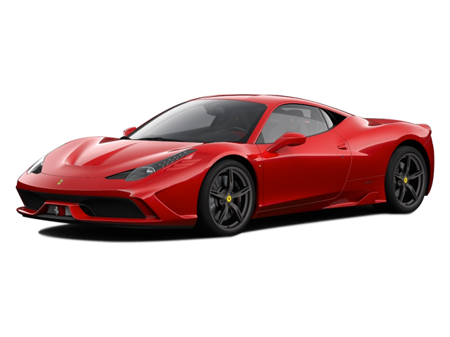

458italia

Ferrari 458
Excelente para as Ruas
A Ferrari 458 tinha motor F136, desenvolvido em parceria com a Maserati e fabricado a partir de 2001. O projeto envolve uma gama de motores V8 de 90 graus com aspiração natural.
R$3.017.237,00